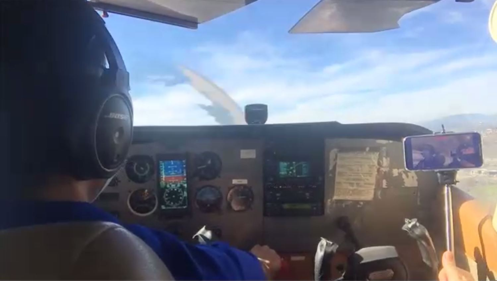
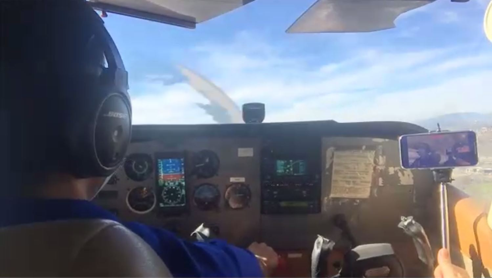

During my four years as a high school student, I have been able to attend a few amazingly well put together field trips, and there have been a couple guest speakers that intrigued me as well. One speaker, Jason Yosinski, talked about machine learning and how it is being used in many fields like robotics and car manufacturing. An especially interesting part was the demo he showed, where the machine could recognize certain objects in an image and return what they are. Another speaker, Donald James, came to DHS to talk to us about his time at NASA and introduce us to the book he wrote. It was super cool to see how he was involved with many of the great space feats of the last few decades. Two of my favorite guest speakers were actually able to come directly to my classes. I was able to meet and hear a talk from Lakshmi Hanspal, the Global Chief Information Security Officer at Amazon, during my cybersecurity class in my junior year. She gave an amazing and engaging talk where she talked about her duties and detailed cybersecurity concepts that one must consider when in charge of all of those systems. Another speaker, Sravanthi Rajanala, head of AI and ML at Walmart, visited my computer science applications class my senior year. This was probably my favorite talk as AI is one of the fields of study that interests me the most. She talked about how her algorithms for search work in order to give the customer the best web shopping experience.
One of the field trips that I've been to so far was a virtual trip to the Livermore Airport, where we met the airport manager, David Decoteau, as well as Sean Moran, the assistant manager. They talked about the specifics of running the airport, where they get their funds, the general infrastructure, and more. We then got to take a virtual flight that took us over the Dublin High School campus. After that, we met Doug Henson, who was a retired military pilot who told us about the Air Force and military and recreational formation flying. Overall it was a very interesting field trip that opened my eyes to the amazing field of aviation. Two of the other field trips that I have been on were Chevron Career Days, where Chevron employees talked to us about their experiences at Chevron and answered our questions about their fields and expertise. There was some overlap in content between the two trips, but I was still able to gather a lot of knowledge about what Chevron is doing to help make the future a better place.The other field trip I attended was to one of the most innovative places in the country, Lawrence Livermore National Lab. This was an amazing experience to see the cutting edge technology in many fields like optics and laser science. I really appreciate the academy’s efforts to inform their students on what is happening just a few miles away.
Being in my senior year, I have had the wonderful opportunity to work with some incredible mentors this year. My mentor, Dipesh Valia, is a software engineer at Ivanti and has given me a lot of valuable insight into his career. I have also met with Steve Batill, an aerospace engineering professor from Notre Dame who has told me a lot about engineering as a whole. He said that engineering is like exercising, if you do push ups, you are working some of the same muscles that a different exercise works, and this is the same with engineering, as all of the branches are connected. In terms of my own work experience, I volunteer at the SPCA in Dublin. I help with everything when it comes to the cats, from feeding them to cleaning up after them. It has helped me get a feel for a professional work environment, which isn’t something I see every day.
 
